International Journal of Environmental Pollution and Remediation (IJEPR)
ISSN: 1929-2732

Volume 1 - Year 2012 - Pages 104-110
DOI: 10.11159/ijepr.2012.015
Radial Filtration in Permeable Reactive Barriers
Benoît Courcelles
École Polytechnique de Montréal
CP 6079, Succ. Centre-Ville, Montreal, Quebec, Canada, H3C 3A7
benoit.courcelles@polymtl.ca
Abstract - Permeable Reactive barriers (PRBs) constitute an in situ technique of remediation which has been largely applied for two decades. Their originality relies on the treatment of contaminated groundwater thanks to natural gradients and without any energy. Nevertheless, natural gradients are most of the time limited to dozens of centimetres and the filters should be carefully designed to prevent any bypass of the PRB. Face to this problem, an innovative radial filter has been designed to reduce the head loss comparatively to classical filters with axial flow and to improve the contact time from a chemical point of view. The new filter is cylindrical and composed of a core of coarse material, surrounded by a reactive material and a final ring of coarse material. The radial flow can be centripetal or centrifugal depending on the hydraulic heads applied to the filter. Based on numerical simulations and analytical solutions, we have demonstrated that the new configuration could improve the lifetime of a PRB and, in a centripetal configuration, improve the contact time where the groundwater is the most contaminated. These developments constitute an improvement of the existing PRBs and extent their applications.
Keywords: Permeable Reactive Barrier, Filtration, Radial Flow, Reactive Media
© Copyright 2015 Authors - This is an Open Access article published under the Creative Commons Attribution License terms. Unrestricted use, distribution, and reproduction in any medium are permitted, provided the original work is properly cited.
1. Introduction
To face the problem of site contamination, Permeable reactive barriers (PRBs) have been developed as an in situ passive remediation technique for the treatment of polluted groundwater (Blowes et al., 1995). The originality of this technique consists in the exploitation of natural gradients to treat the groundwater in a reactive media able to degrade, adsorb or precipitate the pollutants. As a consequence, no external energy and no related costs are needed for the remediation of a contaminated site (RECORD, 2010).
The PRBs can be implemented according to three main geometric configurations: (1) a continuous wall acting as continuous reactive trenches or injection wells (Blowes et al. 1995); (2) a funnel-and-gate configuration composed of two impermeable walls that direct the contaminated plume towards a filtering gate (Starr and Cherry, 1994); and (3) a caisson configuration similar to the funnel-and-gate configuration, but in which the flow in the filtering gate is in the upward direction (Porter, 1998, Warner et al., 1998).
These three geometric configurations are illustrated in the Fig. 1. Continuous walls represent the common type of PRB (Blowes et al., 1995). They are composed of a vertical reactive media installed down gradient of a contaminant plume and perpendicular to the groundwater flow. As they constitute the historical configuration of PRB, continuous walls have been largely implemented and their effectiveness has been documented in the literature (O'Hannesin and Gillham, 1998). A design method is also dedicated to this configuration and relies on the residence time of pollutants in the reactive media (Gavaskar et al., 1998, Powell et al., 1998).
In the funnel-and-gate configuration, the groundwater is channelled towards a reactive media by two impermeable walls. In this configuration, the reactive media is placed vertically and perpendicular to the groundwater flow by conventional techniques of trenching. The filtration of the contaminated groundwater is realized horizontally in a classical filtering gate.
As a variant of the previous geometry, the caisson configuration has been developed. This configuration consists in a funnel and a filtering gate with vertical filters in which the filtration is realized in the upward direction. This upward flow through the reactive media is believed to be more uniform and close to plug-flow (Elder, 2000). The caissons are most of the time cylindrical or parallelepiped and two different configurations have been developed and patented by Soletanche-Bachy (cylindrical filters) and Waterloo University (parallelepiped filters).
Except economic considerations, the design of such PRBs relies on three technical aspects: (1) the reactive media must be appropriate to the pollutants and its selection must essentially be based on factors such as site-specific geochemical, biological, and hydrogeological conditions, (2) the filters' size must be large enough to ensure a residence sufficient time for rate-limited reactions to occur (Shoemaker et al., 1995, O'Hannesin and Gillham, 1998, Warren et al., 1995), (3) the reactive material must have a hydraulic conductivity greater than the surrounding aquifer to prevent any bypass of the system (Starr and Cherry, 1994).
The selection of an appropriate reactive material is a major challenge in PRB design and it requires thorough analysis of numerous performance parameters (Buddihma and Laura, 2012). The present paper will assume that the reactive material is adequately selected and will focus on hydraulic considerations leading to the optimization of the residence time and the head loss in a filter of PRB.
As the clogging of reactive filters has been identified as a main cause of dysfunction (RECORD, 2010), recent studies have been dedicated to hydraulic aspects, such as the influence of aquifer and filters permeabilities (Liu et al., 2011), or the influence of precipitates considering a kinetic of reaction (Li et al., 2005, Courcelles et al., 2011) or at the equilibrium (Liang and al., 2003). The originality of this paper is to address the problem of clogging with a new geometric configuration in which the head loss is reduced comparatively to a classical caisson with an upward flow.
2. New Filter's Principles
2. 1. Notion of Radial Flow
The design of the new filter relies on the following assumption: considering a constant flow rate of contaminated groundwater and a constant volume of granular media, there is less head loss in a filter if the section perpendicular to the flow is increased while the thickness of the reactive media is decreased. This assumption is a direct consequence of Darcy's law, which explains that the flow rate is proportional to the section perpendicular to the flow and to the gradient, that is to say the head loss divided by the length of the permeable media. Considering the classical dimensions of caissons, whose diameter is most of the time between 0.5 and 1 m and whose length can attain several meters (typically 3 to 5 m), a new filtration approach relying on a radial flow has been developed. As illustrated on the Fig. 2a, the new filter is cylindrical and is composed of a non-reactive coarse material in the middle, surrounded by a reactive media and followed by another non-reactive coarse material. These granular media are placed in an impermeable shale with two screens representing the inlet or the outlet of the filter depending on the total head applied on each screen. The first screen is composed of a perforated disc at the base of the central coarse material, while the second one is a perforated ring at the top of the peripheral coarse material. The coarse material should be permeable enough to limit the head loss and to concentrate this it in the reactive material. As a consequence, the head loss is driven by the radius of the reactive media limited to 0.25 to 0.5 m, which is under the length of vertical flow in classical caissons.
2. 2. Head Loss Modelling
Comparing the head losses induced by this new filter and by a classical cylindrical filter with an upward flow, the first one is interesting because the pathway in the reactive material is reduced and the head loss is consequently limited. Nevertheless, this assumption is correct if the pathways are radially oriented and not along an oblique line from the inlet to the outlet.
Theoretically, the orientation of the pathways is driven by the ratio of hydraulic conductivities of the coarse and reactive materials. To verify this point and to illustrate the influence of this ratio, several simulations have been performed by varying the hydraulic conductivities for a fixed geometry of the new filter. The geometry of the filter is determined by two factors: (1) the residence time, equal to the pore volume divided by the flow rate, must be high enough to ensure a complete chemical reaction, and (2) the slenderness ratio of the filter should be appropriate to manipulate it easily. As a consequence, the volume of the reactive is fixed by hydrogeological considerations and the diameter of the filter is preferentially limited to direct it manually when hooked to a crane. These reasons represent a constraint for the geometry of the filter and the optimisation of hydraulic performances should involve an adequate selection of the material granulometry. Nevertheless, the grain size curve of the reactive material also has an impact on chemical performances. Indeed, small grains have poor hydraulic performances, but their higher specific surface improves their reactivity. As a consequence, all hydraulic considerations presented in this paper should be associated to chemical tests and a filter should not be implemented without any chemical tests at a pilote scale.
As the geometry of the filter is defined by hydrogeological and technical aspects, some representative dimensions of filter have been selected for the simulations. These dimensions were Rint = 0.05 m, Rext = 0.5 m, R=0.55 m and L= 1 m. As regards the boundary conditions, constant hydraulic heads have been imposed to the inlet and the outlet of the new filter, and two series of simulations have been performed depending on the flow direction: from the middle (series A) or from the periphery (series B). These constant hydraulic heads are representative of classical site conditions and are respectively 0.5 m at the inlet and 0 m at the outlet. The shale of the filter has been considered impermeable and a continuity of the flow has been imposed at the two interfaces between the coarse material and the reactive material. As regards the flow of contaminated groundwater, these simulations involve the equation of continuity in a homogenous media (Eq. 1).
|
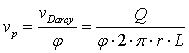 |
(1) |
where k is the tensor of hydraulic conductivity in the coarse or reactive materials (kcoarse or kreactive), and h is the total hydraulic head.
To illustrate the impact of the ratio of hydraulic conductivities of the coarse and reactive materials, six simulations have been performed for each series, with a ratio varying from 1 to 500. The ratios are presented in Table 1 for all simulations.
Table 1. Parameters for the two series of simulations.
|
Series A |
Series B |
Ratio kcoarse / kreactive |
|
A-1 |
B-1 |
1 |
|
A-2 |
B-2 |
5 |
|
A-3 |
B-3 |
25 |
|
A-4 |
B-4 |
50 |
|
A-5 |
B-5 |
100 |
|
A-6 |
B-6 |
500 |
The simulations have been performed with the Comsol Multiphysics software and the results are presented in Fig. 3. In this illustration, the flow is perpendicular to the equipotential lines and is obliquely oriented while the ratio remains under 50. Above this value, the flow starts to be radially oriented and is definitely radial for a ratio of 500 between the coarse and the reactive materials. As a consequence, a minimum ratio of about 100 seems to warranty a quasi-radial flow for the selected geometry. This assumption will be made for this paper. Of course, the minimum ratio should be calculated for any other dimension of filter.
2. 3. Residence Time and Chemical Kinetic
By observing the behaviour of a PRB at a large time scale, we can assume that the flow rate of the contaminated groundwater remains constant during a season. This constant flow rate and the minimum residence time defined by chemical considerations constitute the two main constraints on the dimensions of the filter. In the new filter, the pore velocity vp at a radius r in the reactive media is represented by Eq. 2. This pore velocity is a function of the porosity f, the flow rate Q and the length of the filter L.
|
|
(2) |
The residence time T in the reactive media is then a function of the radius at the entrance (Rint) and the exit (Rext) of the reactive media, the length of the filter L and the flow rate Q. As a consequence, Eq. 3 represents a constraint on the radii capsuling the reactive media and its length.
|
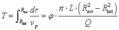 |
(3) |
One can note that this constraint only depends on the pore volume, the flow rate and the minimum residence time, and is not a function of the flow directions. If we consider an upward flow in a cylindrical filter with the same cross section and length as a radial filter, the total residence time remains similar. Nevertheless, its evolution along a pathway is different as a result of the variation of the pore velocity along a radius in the radial configuration. To illustrate this purpose, a relative pathway x(t) can be defined as the length of crossed reactive material at a time t divided by the total length of the pathway (Eq. 4).
|
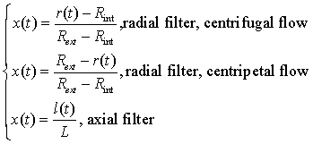 |
(4) |
According to Eq. 3, the time t to flow through a relative pathway x(t) is defined as a function of the flow rate, the porosity and the geometry of the filter (Eq. 5).
|
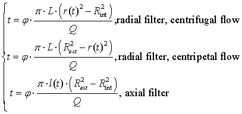 |
(5) |
The time t from the entrance of the filter (x=0) to the exit (x=1) is represented on the Fig. 4 for each flow configurations. This illustrates that the total residence times in the three filters are similar, but they differ locally.
In a radial configuration, the pore velocity is decreasing when moving away from the middle as a result of the increase of the cross section A=2p rL. This observation is particularly interesting in a centripetal flow, because the pore velocity is reduced where the concentration in contaminants is higher. This leads to improve the chemical performances of the filter by increasing the contact time at the entrance of the filter. The impact on the chemical performances can be illustrated by considering the retention of pollutants by adsorption, such as arsenic on activated alumina (Zaiter, 2005) and a first order kinetic for the adsorption (Eq. 6).
|
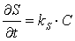 |
(6) |
where kS is a coefficient of adsorption (l.g-1.s-1), C represents the concentration in contaminant (g.l-1), and S is the adsorbed pollutants per mass of filter (g/g).
Considering this kinetic of adsorption, the kinetic of decontamination is provided by Eq. 7 and the equation of mass conservation is represented by Eq. 8.
|
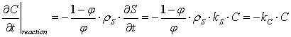 |
(7) |
|
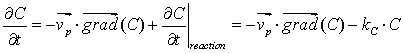 |
(8) |
where f is the porosity of the reactive media (-), rs is the density of the reactive grains (g.l-1), kC a constant of reaction (s-1) and vp represents the pore velocity vector (m.s-1).
By considering the pore velocity vectors and the concentration in radial and axial configurations, the differential equations determining the evolution of the concentration in steady state conditions are as follows:
|
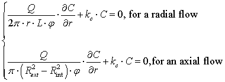 |
(9) |
The resolution of these differential equations leads to the following expressions of the concentration in contaminant C by considering a constant concentration C0 at the entrance of each filter:
|
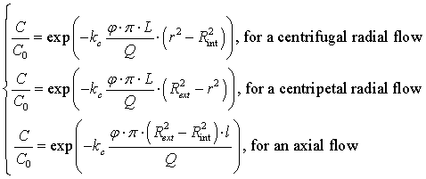 |
(10) |
As illustrated on Fig. 5, which represents the evolution of the three previous equations for typical values of parameters showed in Table 2, the low velocity at the entrance of the radial filter in the centripetal configuration improves the retention of contaminants and delays the breakthrough of the filter.
Table 2. Typical parameters for the flow rate, the dimensions and the kinetic of retention.
|
Q |
0,017 |
m3/min |
|
0,4 |
- |
|
Rint |
0,05 |
m |
kC |
0.15 |
s-1 |
|
Rext |
0,5 |
m |
kS |
0.1 |
l.g-1.s-1 |
|
L |
1 |
m |
s |
2650 |
g/l |
2. 4. Hydraulic Performances
If the radial configuration is interesting in term of contact time, the main advantage of a radial flow remain in the head loss, which can be considerably reduced. To illustrate this purpose, we can express the flow rate in a radial filter as a function of the hydraulic heads at the entrance (Hint) and the exit (Hext) of the reactive media. By similitude, the radial filter can be considered as a well (represented by the central coarse material) in a captive aquifer (induced by the impermeable shale under and above the reactive media). As a consequence, the flow rate in the filter can be expressed as:
|
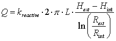 |
(11) |
|
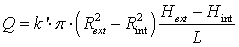 |
(12) |
where
|
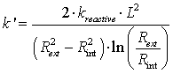 |
(13) |
This last equation is similar to the Darcy's law expressed in a filter with an axial flow and an apparent hydraulic conductivity k' for the reactive media. The flow rate Q is thus expressed as is equal to the multiplication of the apparent hydraulic conductivity k', the cross section p(Rext2-Rint2) and the gradient (Hext-Hint)/L. In a classical filter, the expression of the flow rate would be the similar but k' would be replaced by k. As the Fig. 6 illustrating the Eq.13 shows, the apparent hydraulic conductivity k' can be several times higher than the hydraulic conductivity (up to 80 when considering a radius of 25 cm and a length of 2 m). As a consequence, the radial filter appears to be "more permeable" than a classical filter at constant volume. This last result is particularly interesting in case of clogging, as it can be induced by colloids or precipitates in the reactive media. Indeed, several simulations performed on PRBs in a funnel-and-gate configuration show that the flow rate in a filtering gate can be considered constant while the hydraulic conductivity of the filter remains above a critical value (Courcelles, 2007). As a consequence of its hydraulic performances, the lifetime of a radial filter could be longer than a classical filter's.
3. Conclusion
Permeable reactive barriers constitute a remediation technology whose efficiency has been proven and documented. Nevertheless, a particular attention should be addressed to the design of the filters to prevent any bypass of the treatment system. Indeed, in case of high head loss in the filter, the pollutant could bypass the funnel and contaminate the groundwater downstream of the PRB. Considering this important point, an innovative technology of filtration relying on a radial flow in a cylindrical filter has been developed. The radial filtration can be centrifugal or centripetal, but the second one presents an advantage in terms of contact time for chemical reactions. Indeed, this contact time is improved at the entrance of the filter, that is to say where the concentration in contaminant is higher. Finally, the main point of this study is that a radial filtration reduces considerably the head loss compared to the one observed in classical axial filters. As a consequence, the applications of this technology are promising, in particular in aquifers with a high permeability where the head loss in the filters must be reduced. Moreover, this new technology can lead to the improvement of the lifetime of a PRB. Indeed, as a radial filter can appear to be several dozen of times more permeable than an axial filter, the new technology can prevent any clogging problem leading to a hydraulic dysfunction of a classical BPR.
List of Symbols
f porosity of the reactive media (–)
rs density of the reactive grains (g.l-1)
A cross section (m2)
C concentration in contaminant (g.l-1)
C0 constant concentration at the entrance of a filter (g.l-1)
h total hydraulic head (m)
Hexth at the exit of the reactive media (m)
Hinth at the entrance of the reactive media (m)
k hydraulic conductivity (m.s-1)
k' apparent hydraulic conductivity (m.s-1)
kC constant of reaction (s-1)
kcoarse hydraulic conductivity of the coarse material (m.s-1)
kreactive hydraulic conductivity of the reactive material (m.s-1)
L length of a filter (m)
PRB permeable reactive barrier
Q flow rate (m3.s-1)
R radius of a radial filter (m)
R' radius of an axial filter (m)
Rint internal radius of the reactive media (m)
Rext external radius of the reactive media (m)
S adsorbed pollutants per mass of filter (g.g-1)
T residence time (s)
x(t) relative pathway (-)
References
Blowes, D., Ptacek, C., Cherry, J., Gillham, R., and Robertson, W. (1995). Passive Remediation of Groundwater Using In Situ Treatment Curtains."Geoenvironment 2000: Characterization, Containment, Remediation, and Performance in Environmental Geotechnics", Daniel, D. and Acar, Y. (Eds.), ASCE, GSP 46, 1588-1607.
Courcelles, B. (2007). Étude du comportement physico-chimique des filtres de barrières perméables réactives : Modélisation et expérimentation à l'échelle pilote. PhD Thesis, École Centrale Paris.
Courcelles, B., Modaressi-Farahmand-Razavi, A., Gouvenot, D., Esnault-Filet, A. (2011). Influence of precipitates on hydraulic performance of permeable reactive barrier filters. International Journal of Geomechanics, 11(2), 142-151. View Article
Elder, C. R. (2000). Evaluation and Design of Permeable Reactive Barriers amidst Heterogeneity. PhD Thesis, University of Wisconsin-Madisson.
Gavaskar, A., Gupta, N., Sass, B., Janosy, R., O'Sullivan, D. (1998). Permeable Barriers for Groundwater Remediation: Design Construction, and Monitoring. Battelle Press, Columbus, OH. View Article
Li, L., Benson, C. H., Lawson, E. M. (2005). Impact of mineral fouling on hydraulic behavior of permeable reactive barriers. Ground Water, 43(4), 582-596. View Article
Liang, L., Sullivan, A. B., West, O. R., Moline, G. R., Kamolpornwijit, W. (2003). Predicting the Precipitation of Mineral Phases in Permeable Reactive Barriers. Environmental Engineering Science, 20(6), 635-653. View Article
Liu, S., Li, X., Wang, H. (2011). Hydraulics Analysis for Groundwater Flow Through Permeable Reactive Barriers. Environmental Modeling and Assessment, 16(6), 591-598 View Article
Indraratna, B., Banasiak, L. (2012). Permeable Reactive Barrier (PRB) Technology An Innovative Solution for the Remediation of Acidic Groundwater from Acid Sulphate Soil (ASS) Terrain. GeoCongress 2012. pp. 3523-3532 View Article
O'Hannesin, S. and Gillham, R. (1998). Long-Term Performance of an In Situ "Iron Wall" for Remediation of VOCs. Ground Water, 36(1), 164-170. View Article
Porter, J. (1998). Greener Process. Ground Engineering, July, 32-33.
Powell, R., Blowes, D., Gillham, R., Schultz, D., Sivavec, T., Puls, R., Vogan, J., Powell, P., Landis, R. (1998). Permeable Reactive Barrier Technologies for Contaminant Remediation. EPA/600/R-98/125, Washington DC. View Article
RECORD (2010), Barrières Perméables réactives (BPR): Retours d'expériences, perspectives d'application et enjeux de recherche pour le traitement des pollutions métalliques. Actualisation de l'état de l'art RECORD 2004, 2010, 272 p, n°08-0331/1A. View Article
Shoemaker, S., Greiner, J., and Gillham, R., (1995). "Permeable Reactive Barriers". Assessment of Barrier Containment Technologies: A Comprehensive Treatment for Environmental Remediation Application, Rumer, R. and Mitchell, J. Eds., International Containment Technology Workshop, Baltimore, Maryland, August 29-31, 301-353. View Article
Starr, R. and Cherry, J. (1994). In Situ Remediation of Contaminated Ground Water: The Funnel-and-Gate System. Ground Water, 32(3) 465-476. View Article
Warner, S., Yamane, C., Gallinatti, J. and Hankins, D. (1998). Considerations for Monitoring Permeable Ground-Water Treatment Walls. Journal of Environmental Engineering, 124(6), 524-529. View Article
Warren, K., Arnold, R., Bishop, T., Lindholm, L, and Betterton, E (1995). Kinetics and Mechanisms of Reductive Dehalogenation of Carbon Tetrachloride Using Zero Valent Metals. Journal of Hazardous Materials, 41, 217-227. View Article
Zaiter, M. (2005): Etude des matériaux constituants les BPR pour le traitement de l'arsenic: conception, expérimentation, modélisation. PhD Thesis. Ecole Centrale Paris.